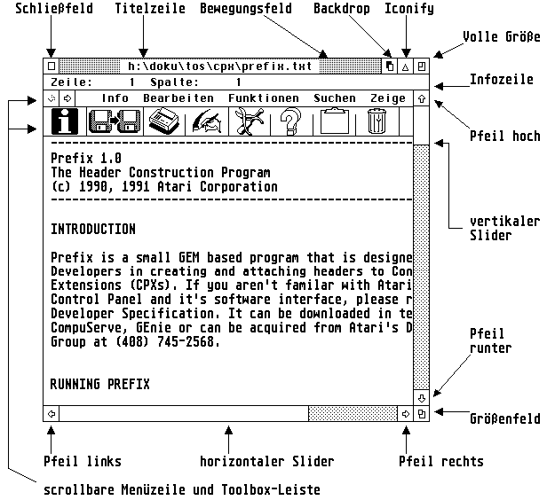

Diese Bibliothek stellt Funktionen zur Verfügung um Fenster zu erzeugen, zu öffnen, zu schließen und vieles mehr. Insgesamt stehen die folgenden Routinen zur Verfügung:
| • sys_set_winframe_manager | Installieren eines neuen Fensterrahmen-Manager |
| • wind_calc | Fensterdimensionen berechnen. |
| • wind_close | Fenster schließen. |
| • wind_create | Fenster erzeugen. |
| • wind_delete | Fenster löschen. |
| • wind_draw | Fensterelemente neu Zeichnen. |
| • wind_find | Fensterhandle anhand einer Positionsangabe ermitteln. |
| • wind_get | Eigenschaften eines Fensters ermitteln. |
| • wind_new | Alle Fenster löschen. |
| • wind_open | Fenster öffnen. |
| • wind_set | Eigenschaften eines Fensters verändern. |
| • wind_update | Bildschirmoperationen sperren oder freigeben. |
| • wind_xget | Eigenschaften eines Fensters ermitteln, erweiterte Version |
| • wind_xset | Eigenschaften eines Fensters verändern, erweiterte Version |
Hinweis: Unter MagiC sollte eine einzelne Applikation nicht mehr als 16 Fenster benutzen, da sonst der Nachrichtenpuffer des Systems überlaufen kann, und evtl. Redraws nicht mehr ausgeführt werden können.
Querverweis:
Komponenten eines Fensters Style-Guidelines Fensterdialoge
Übersicht der wind_get/set Unterfunktionen
| Name: | ??? |
| AES-Nummer: | 0 (Unterfunktion 6) |
| Deklaration: | int16_t sys_set_winframe_manager( WINFRAME_HANDLER *old_wfh, WINFRAME_HANDLER *new_wfh, WINFRAME_SETTINGS **set ) |
| Beschreibung: | |
| Ergebnis: | Unbekannt. |
| Verfügbar: | Ab MagiC 6 |
| Gruppe: | Fensterverwaltung |
| Querverweis: | Binding |
| C: | int16_t sys_set_winframe_manager( WINFRAME_HANDLER *old_wfh, WINFRAME_HANDLER *new_wfh, WINFRAME_SETTINGS **set ); | |||||||||||||||||||||||||||||||||
| Umsetzung: | int16_t sys_set_winframe_manager( WINFRAME_HANDLER *old_wfh, WINFRAME_HANDLER *new_wfh, WINFRAME_SETTINGS **set ) { int_in[0] = 6; /* Subcode 6: Fensterrahmen-Manager */ addr_in[0] = old_wfh; addr_in[1] = new_wfh; crys_if(0); *set = addr_out[0]; return ( int_out[0] ); } | |||||||||||||||||||||||||||||||||
| GEM-Arrays: |
|
| Name: | »Window Calculation« - berechnet die Grenzen oder den gesamten Platzbedarf eines Fensters. | ||||||||||||||||||||||||
| AES-Nummer: | 108 | ||||||||||||||||||||||||
| Deklaration: | int16_t wind_calc ( int16_t wi_ctype, int16_t wi_ckind, int16_t wi_cinx, int16_t wi_ciny, int16_t wi_cinw, int16_t wi_cinh, int16_t *coutx, int16_t *couty, int16_t *coutw, int16_t *couth ); | ||||||||||||||||||||||||
| Beschreibung: | Die Funktion berechnet für ein Fenster die Größe des
Randbereichs aus den Koordinaten des Arbeitsbereichs oder umgekehrt.
Es gilt:
Hinweis: Man sollte niemals davon ausgehen, daß die Elemente eines Fensters eine bestimmte Größe oder Position besitzen, sondern immer diese Funktion benutzen. WINX-Erweiterung: Vorraussetzung: appl_getinfo (Opcode 22360) Setzt man Bit 15 in wi_ctype (z.B. durch Addition der Konstanten WC_WIN (=$8000)) und übergibt in wi_ckind statt Fensterelementen die Kennung eines Fensters, ist es möglich die Ausmaße des Fensters exakter zu bestimmen, da die Funktion die aktuellen Eigenschaften des Fenster berücksichtigen kann (z.B. eine Toolbar). Außerdem führt die Funktion eine Autokorrektur des Strukturbereichs durch, die auch von Funktionen wie wind_open, wind_set( WF_CURRXYWH) vorgenommen wird, falls dies notwendig ist und vom AES unterstützt wird. | ||||||||||||||||||||||||
| Ergebnis: | Ein Fehler ist nur dann aufgetreten, wenn als Ergebnis 0 zurückgegeben wird. | ||||||||||||||||||||||||
| Verfügbar: | All AES versions. | ||||||||||||||||||||||||
| Gruppe: | Fensterverwaltung | ||||||||||||||||||||||||
| Querverweis: | Binding wind_create Probleme bei Toolbars |
| C: | int16_t wind_calc ( int16_t wi_ctype, int16_t wi_ckind, int16_t wi_cinx, int16_t wi_ciny, int16_t wi_cinw, int16_t wi_cinh, int16_t *coutx, int16_t *couty, int16_t *coutw, int16_t *couth ); | |||||||||||||||||||||||||||||||||||||||||||||||||||
| Umsetzung: | int16_t wind_calc (int16_t wi_ctype, int16_t wi_ckind, int16_t wi_cinx, int16_t wi_ciny, int16_t wi_cinw, int16_t wi_cinh, int16_t *coutx, int16_t *couty, int16_t *coutw, int16_t *couth) { int_in[0] = wi_ctype; int_in[1] = wi_ckind; int_in[2] = wi_cinx; int_in[3] = wi_ciny; int_in[4] = wi_cinw; int_in[5] = wi_cinh; crys_if (108); *coutx = int_out[1]; *couty = int_out[2]; *coutw = int_out[3]; *couth = int_out[4]; return ( int_out[0] ); } | |||||||||||||||||||||||||||||||||||||||||||||||||||
| GEM-Arrays: |
|
| Name: | »Close Window« - schließt ein Fenster. |
| AES-Nummer: | 102 |
| Deklaration: | int16_t wind_close ( int16_t wi_clhandle ); |
| Beschreibung: | Die Funktion schließt das Fenster mit der Kennung
wi_clhandle. Hinweis: Endgültig gelöscht wird das Fenster erst durch einen Aufruf von wind_delete. |
| Ergebnis: | Ein Fehler ist nur dann aufgeteten, wenn als Ergebnis 0 zurückgegeben wird. |
| Verfügbar: | All AES versions. |
| Gruppe: | Fensterverwaltung |
| Querverweis: | Binding wind_open wind_delete |
| C: | int16_t wind_close ( int16_t wi_clhandle ); | ||||||||||||||||||||||||
| Umsetzung: | int16_t wind_close (int16_t wi_clhandle) { int_in[0] = wi_clhandle; return ( crys_if(102) ); } | ||||||||||||||||||||||||
| GEM-Arrays: |
|
| Name: | »Window create« - meldet ein neues Fenster an. | ||||||||||||||||||||||||||||||||||||||||||||||||||||||
| AES-Nummer: | 100 | ||||||||||||||||||||||||||||||||||||||||||||||||||||||
| Deklaration: | int16_t wind_create ( int16_t wi_crkind, int16_t wi_crwx, int16_t wi_crwy, int16_t wi_crww, int16_t wi_crwh ); | ||||||||||||||||||||||||||||||||||||||||||||||||||||||
| Beschreibung: | Die Funktion versucht beim AES ein neues Fenster anzumelden und
legt dabei gleichzeitig sein Aussehen und die maximale Größe fest. wi_crwx, wi_crwy, wi_crww, wi_crwh legen die maximale Ausdehnung des Fensters fest. wi_crkind beschreibt die Komponenten als Bitvektor:
Hinweis: Die Hotclose-Box steht erst ab PC-GEM bzw. MagiC (jeweils) ab Version 2.0 zur Verfügung. Nicht benötigte Fensterränder (z.B. Rand unten) werden ab AES-Version 4.x bzw. MagiC 3 weggelassen; dadurch stehen einige Pixel mehr an nutzbarer Fläche zur Verfügung. MENUBAR steht nur in XaAES zur Verfügung. Es reserviert Platz für eine Menuzeile im Fenster. Die Menüzeile muß mit wind_set angemeldet werden. Setting BORDER will make XaAES allow for window border sizing without the SIZER gadget being used. Das Vorhandensein neuerer Komponenten wie beispielsweise dem Iconify-Button, sollte am besten per appl_getinfo (Opcode 11) erfragt werden. | ||||||||||||||||||||||||||||||||||||||||||||||||||||||
| Ergebnis: | Die Funktion liefert ein nicht negatives Handle, falls das AES noch ein freies Windowhandle zur Verfügung hat. Ein Rückgabewert kleiner Null signalisiert einen Fehler oder keine weiteren Handles mehr. | ||||||||||||||||||||||||||||||||||||||||||||||||||||||
| Verfügbar: | All AES versions. | ||||||||||||||||||||||||||||||||||||||||||||||||||||||
| Gruppe: | Fensterverwaltung | ||||||||||||||||||||||||||||||||||||||||||||||||||||||
| Querverweis: | Binding wind_delete |
| C: | int16_t wind_create ( int16_t wi_crkind, int16_t wi_crwx, int16_t wi_crwy, int16_t wi_crww, int16_t wi_crwh ); | ||||||||||||||||||||||||||||||||||||
| Umsetzung: | int16_t wind_create (int16_t wi_crkind, int16_t wi_crwx, int16_t wi_crwy, int16_t wi_crww, int16_t wi_crwh) { int_in[0] = wi_crkind; int_in[1] = wi_crwx; int_in[2] = wi_crwy; int_in[3] = wi_crww; int_in[4] = wi_crwh; return ( crys_if(100) ); } | ||||||||||||||||||||||||||||||||||||
| GEM-Arrays: |
|
| Name: | »Delete Window« - löscht ein Fenster |
| AES-Nummer: | 103 |
| Deklaration: | int16_t wind_delete ( int16_t wi_dhandle ); |
| Beschreibung: | Die Funktion löscht das Fenster mit der Kennung wi_dhandle und gibt das entsprechende Windowhandle wieder frei. |
| Ergebnis: | Ein Fehler ist nur dann aufgeteten, wenn als Ergebnis 0 zurückgegeben wird. |
| Verfügbar: | All AES versions. |
| Gruppe: | Fensterverwaltung |
| Querverweis: | Binding wind_create wind_close |
| C: | int16_t wind_delete ( int16_t wi_dhandle ); | ||||||||||||||||||||||||
| Umsetzung: | int16_t wind_delete (int16_t wi_dhandle) { int_in[0] = wi_dhandle; return ( crys_if(103) ); } | ||||||||||||||||||||||||
| GEM-Arrays: |
|
| Name: | »Draw Window« - Zeichnet die Fensterelemente. | ||||||
| AES-Nummer: | 99 | ||||||
| Deklaration: | int16_t wind_draw ( int16_t wi_dhandle, int16_t wi_dstartob ); | ||||||
| Beschreibung: | Zeichnen der Non-Client-Area (Fensterelemente) eines Fensters
mit der Kennung wi_dhandle unter Berücksichtigung der
Rechteckliste.
Anmerkung Diese Funktion steht nur unter N.AES zur Verfügung und ist für "normale" Anwendungen relativ uninteressant, sie wird vornehmlich vom internen Screenmanager zum Zeichnen der Fensterobjekte verwendet. | ||||||
| Ergebnis: | Ein Fehler ist nur dann aufgeteten, wenn als Ergebnis 0 zurückgegeben wird. | ||||||
| Verfügbar: | Das Vorhandensein der Funktion ist über appl_getinfo (Opcode 65) nachprüfbar. | ||||||
| Gruppe: | Fensterverwaltung | ||||||
| Querverweis: | Binding |
| C: | int16_t wind_draw ( int16_t wi_dhandle, int16_t wi_dstartob ); | |||||||||||||||||||||||||||
| Umsetzung: | int16_t wind_draw ( int16_t wi_dhandle, int16_t wi_dstartob ); { int_in[0] = wi_dhandle; int_in[1] = wi_dstartob; return ( crys_if(99) ); } | |||||||||||||||||||||||||||
| GEM-Arrays: |
|
| Name: | »Find Window« - sucht ein Fenster zu einem bestimmten Punkt. | ||||||
| AES-Nummer: | 106 | ||||||
| Deklaration: | int16_t wind_find ( int16_t wi_fmx, int16_t wi_fmy ); | ||||||
| Beschreibung: | Die Funktion ermittelt die Kennung des Fensters, welches sich
an einer bestimmten Position befindet. Es gilt:
| ||||||
| Ergebnis: | Die Funktion liefert die entsprechende Fensterkennung zurück. Der Wert 0 steht dabei für den Desktop, -1 bedeutet, daß sich kein Fenster an der angegebenen Position befindet. | ||||||
| Verfügbar: | All AES versions. | ||||||
| Gruppe: | Fensterverwaltung | ||||||
| Querverweis: | Binding wind_get |
| C: | int16_t wind_find ( int16_t wi_fmx, int16_t wi_fmy ); | |||||||||||||||||||||||||||
| Umsetzung: | int16_t wind_find (int16_t wi_fmx, int16_t wi_fmy) { int_in[0] = wi_fmx; int_in[1] = wi_fmy; return ( crys_if(106) ); } | |||||||||||||||||||||||||||
| GEM-Arrays: |
|
| Name: | »Get Window« - ermittelt die Parameter eines Fensters. | ||||||||||||||||||||||||||||||||||||||||||||||||||||||||||||||||||||||||||||||||||||||||||||||||||||||||||||||||||||||||||||||||||||||||||||||||||||||||||||||||||||||||||||||||||||||||||||||||
| AES-Nummer: | 104 | ||||||||||||||||||||||||||||||||||||||||||||||||||||||||||||||||||||||||||||||||||||||||||||||||||||||||||||||||||||||||||||||||||||||||||||||||||||||||||||||||||||||||||||||||||||||||||||||||
| Deklaration: | int16_t wind_get ( int16_t wi_ghandle, int16_t wi_gfield, int16_t *wi_gw1, int16_t *wi_gw2, int16_t *wi_gw3, int16_t *wi_gw3 ); | ||||||||||||||||||||||||||||||||||||||||||||||||||||||||||||||||||||||||||||||||||||||||||||||||||||||||||||||||||||||||||||||||||||||||||||||||||||||||||||||||||||||||||||||||||||||||||||||||
| Beschreibung: | Die Funktion liefert abhängig von den übergebenen Parametern
verschiedene Informationen über das Fenster mit der Kennung
wi_ghandle. Es gilt für wi_gfield. Zusammenfassung aller Unterfunktionen
Hinweis: Die Parameter wi_gw1, wi_gw2, wi_gw3 und wi_gw4 sind dabei reine Ausgabe-Parameter. | ||||||||||||||||||||||||||||||||||||||||||||||||||||||||||||||||||||||||||||||||||||||||||||||||||||||||||||||||||||||||||||||||||||||||||||||||||||||||||||||||||||||||||||||||||||||||||||||||
| Ergebnis: | Ein Fehler ist nur dann aufgetreten, wenn als Ergebnis 0 zurückgegeben wird. | ||||||||||||||||||||||||||||||||||||||||||||||||||||||||||||||||||||||||||||||||||||||||||||||||||||||||||||||||||||||||||||||||||||||||||||||||||||||||||||||||||||||||||||||||||||||||||||||||
| Verfügbar: | In allen AES Versionen. | ||||||||||||||||||||||||||||||||||||||||||||||||||||||||||||||||||||||||||||||||||||||||||||||||||||||||||||||||||||||||||||||||||||||||||||||||||||||||||||||||||||||||||||||||||||||||||||||||
| Gruppe: | Fensterverwaltung | ||||||||||||||||||||||||||||||||||||||||||||||||||||||||||||||||||||||||||||||||||||||||||||||||||||||||||||||||||||||||||||||||||||||||||||||||||||||||||||||||||||||||||||||||||||||||||||||||
| Querverweis: | Binding wind_set Unterfunktionsübersicht |
| C: | int16_t wind_get ( int16_t wi_ghandle, int16_t wi_gfield, int16_t *wi_gw1, int16_t *wi_gw2, int16_t *wi_gw3, int16_t *wi_gw3 ); | |||||||||||||||||||||||||||||||||||||||
| Umsetzung: | int16_t wind_get ( int16_t wi_ghandle, int16_t wi_gfield, int16_t *wi_gw1, int16_t *wi_gw2, int16_t *wi_gw3, int16_t *wi_gw3) { int_in[0] = wi_ghandle; int_in[1] = wi_gfield; crys_if (104); *wi_gw1 = int_out[1]; *wi_gw2 = int_out[2]; *wi_gw3 = int_out[3]; *wi_gw4 = int_out[4]; return ( int_out[0] ); } | |||||||||||||||||||||||||||||||||||||||
| GEM-Arrays: |
|
| Name: | »New Window« - schließt alle Fenster. |
| AES-Nummer: | 109 |
| Deklaration: | void wind_new ( void ); |
| Beschreibung: | Die Funktion schließt und löscht alle Fenster, und
setzt die mit wind_update gemachten Blockierungen zurück. Hinweis zu MagiC: Hier wird die Funktion als aufwendige, globale und umfassende Aufräumfunktion für eine Applikation ausgeführt, und löscht auch nur noch deren Updateanforderungen, Fenster, Menüs usw. Andere Applikationen werden auf keinen Fall beeinträchtigt. |
| Ergebnis: | Die Funktion hat kein Ergebnis. |
| Verfügbar: | Seit AES Version 1.4 |
| Gruppe: | Fensterverwaltung |
| Querverweis: | Binding wind_create wind_close wind_update |
| C: | void wind_new ( void ); |
| Umsetzung: | void wind_new (void) { crys_if (109); } |
| GEM-Arrays: |
| Name: | »Open Window« - öffnet ein Fenster. | ||||||||||||
| AES-Nummer: | 101 | ||||||||||||
| Deklaration: | int16_t wind_open ( int16_t wi_ohandle, int16_t wi_owx, int16_t wi_owy, int16_t wi_oww, int16_t wi_owh ); | ||||||||||||
| Beschreibung: | Die Funktion stellt ein Fenster auf dem Bildschirm dar. Es
gilt:
Hinweis: Das Fenster muß vorher per wind_create erzeugt worden sein. Die Komponenten Titelzeile, Infozeile und Slider müssen bereits vorher durch einen wind_set Aufruf gesetzt worden sein. Bei Angabe der Koordinaten -1,-1,-1,-1 wird das Fenster ab MagiC 3 an die nächste freie Position für ikonifizierbare Fenster gelegt. | ||||||||||||
| Ergebnis: | Ein Fehler ist nur dann aufgetreten, wenn als Ergebnis 0 zurückgeliefert wird. | ||||||||||||
| Verfügbar: | All AES versions. | ||||||||||||
| Gruppe: | Fensterverwaltung | ||||||||||||
| Querverweis: | Binding wind_create wind_close wind_set |
| C: | int16_t wind_open ( int16_t wi_ohandle, int16_t wi_owx, int16_t wi_owy, int16_t wi_oww, int16_t wi_owh ); | ||||||||||||||||||||||||||||||||||||
| Umsetzung: | int16_t wind_open (int16_t wi_ohandle, int16_t wi_owx, int16_t wi_owy, int16_t wi_oww, int16_t wi_owh) { int_in[0] = wi_ohandle; int_in[1] = wi_owx; int_in[2] = wi_owy; int_in[3] = wi_oww; int_in[4] = wi_owh; return ( crys_if(101) ); } | ||||||||||||||||||||||||||||||||||||
| GEM-Arrays: |
|
| Name: | »Set Window« - verändert einzelne Parameter eines Fensters. | ||||||||||||||||||||||||||||||||||||||||||||||||||||||||||||||||||||||||||||||||||||||||||||||||||||||||||||||||||||||||||||||||||||||||||||||||||
| AES-Nummer: | 105 | ||||||||||||||||||||||||||||||||||||||||||||||||||||||||||||||||||||||||||||||||||||||||||||||||||||||||||||||||||||||||||||||||||||||||||||||||||
| Deklaration: | int16_t wind_set ( int16_t wi_shandle, int16_t wi_sfield, int16_t wi_sw1, int16_t wi_sw2, int16_t wi_sw3, int16_t wi_sw4 ); | ||||||||||||||||||||||||||||||||||||||||||||||||||||||||||||||||||||||||||||||||||||||||||||||||||||||||||||||||||||||||||||||||||||||||||||||||||
| Beschreibung: | Die Funktion verändert, abhängig von den übergebenen
Parametern, verschiedene Eigenschaften des Fensters mit der Kennung
wi_shandle. Es gilt für wi_sfield. Zusammenfassung aller Unterfunktionen
Hinweis: Die Parameter wi_sw1, wi_sw2, wi_sw3 und wi_sw4 sind dabei von der über den Parameter wi_sfield übergebenen Funktionsnummer abhängig. Bei der Angabe des Fensternamens sollte man aus ästhetischen Gründen vor und hinter der Zeichenkette immer ein Leerzeichen lassen, da sonst das Muster im Fensternamen direkt am ersten und am letzten Buchstaben hängt. Achtung: Die hier angegebenen Opcodes sind nicht mehr vollständig zum PC-GEM kompatibel, da die Entwicklung dort in eine andere Richtung ging. | ||||||||||||||||||||||||||||||||||||||||||||||||||||||||||||||||||||||||||||||||||||||||||||||||||||||||||||||||||||||||||||||||||||||||||||||||||
| Ergebnis: | Ein Fehler ist nur dann aufgetreten, wenn als Ergebnis 0 zurückgegeben wird. | ||||||||||||||||||||||||||||||||||||||||||||||||||||||||||||||||||||||||||||||||||||||||||||||||||||||||||||||||||||||||||||||||||||||||||||||||||
| Verfügbar: | In allen AES Versionen. | ||||||||||||||||||||||||||||||||||||||||||||||||||||||||||||||||||||||||||||||||||||||||||||||||||||||||||||||||||||||||||||||||||||||||||||||||||
| Gruppe: | Fensterverwaltung | ||||||||||||||||||||||||||||||||||||||||||||||||||||||||||||||||||||||||||||||||||||||||||||||||||||||||||||||||||||||||||||||||||||||||||||||||||
| Querverweis: | Binding wind_get wind_create OBJECT Unterfunktionsübersicht |
Ab PC-GEM Version 2.0 gilt:
WF_ATTRB (18): setzt den Fenster-Attributvektor. Es gilt: wi_sw1 = 0 (bzw. 1): Fenster ist oberstes Fenster bzw. nicht; ansonsten keine weiteren Informationen bekannt.
WF_SIZETOP (19): Fenster zum aktiven Fenster machen, ohne die Reihenfolge der anderen Fenster zu verändern. Gleichzeitig können die Position und Größe des Fensters neu festgelegt werden:
| wi_sw1 = | X-Position, und |
| wi_sw2 = | Y-Position |
| wi_sw3 = | Breite, und |
| wi_sw4 = | Höhe des Fensters |
| C: | int16_t wind_set ( int16_t wi_shandle, int16_t wi_sfield, int16_t wi_sw1, int16_t wi_sw2, int16_t wi_sw3, int16_t wi_sw4 ); | |||||||||||||||||||||||||||||||||||||||
| Umsetzung: | int16_t wind_set ( int16_t wi_shandle, int16_t wi_sfield, int16_t wi_sw1, int16_t wi_sw2, int16_t wi_sw3, int16_t wi_sw4 ) { int_in[0] = wi_shandle; int_in[1] = wi_sfield; int_in[2] = wi_sw1; int_in[3] = wi_sw2; int_in[4] = wi_sw3; int_in[5] = wi_sw4; return ( crys_if(105) ); } | |||||||||||||||||||||||||||||||||||||||
| GEM-Arrays: |
|
A class of windows that will always 'float' ontop of classical windows. One key feature of windows in any WF_TOPMOST state is that they do not disturb current keyboard focus, and can be used to issue important messages, status raports, etc., without demanding user interaction.
wind_set (wi_shandle, WF_TOPMOST, wi_sw1,...)
WF_TOPMOST (232)
| wi_sw1 = |
|
Some common characteristics of windows with any WF_TOPMOST state set;
State 1:
Setting state 1 will make the corresponding window 'float' ontop
of all other classical windows. State 1 windows will stay ontop until
closed by the user or the application itself.
State 2:
Setting state 1 will make the corresponding window act like
windows with state 1 set, with one important exception; The window is
linked to the window owner's focus status. This means that when the
application that owns the window looses focus, state 2 windows are
automatically made unvisible by the AES. When the application
regains focus, the window is automatically made visible again. This is
done automatically, and no application handling is necessary.
| Name: | »Update Window« - bestimmt das Neuzeichnen eines Fensters. | ||||||||||||
| AES-Nummer: | 107 | ||||||||||||
| Deklaration: | int16_t wind_update ( int16_t wi_ubegend ); | ||||||||||||
| Beschreibung: | Die Funktion signalisiert dem AES, daß die Benutzerapplikation
gerade den Bildschirm neu aufbaut. Das AES schränkt daraufhin seine
eigenen grafischen "Tätigkeiten", wie z. B. das Herunterklappen von
Dropdownmenüs, ein.
MagiC implementiert den 'check and set mode' von AES 4.00 Der Aufruf erfolgt in diesem Fall per wind_update (BEG_UPDATE|0x100) bzw. wind_update (BEG_MCTRL|0x100). Dabei wird die Update-Kontrolle nur noch übernommen, falls keine andere Applikation die Kontrolle hat bzw. die eigene Applikation besitzt. Das Vorhandensein dieses Features kann per appl_getinfo (Opcode 11) abgefragt werden. | ||||||||||||
| Ergebnis: | Ein Fehler ist nur dann aufgetreten, wenn als Ergebnis 0 zurückgegeben wird. | ||||||||||||
| Verfügbar: | All AES versions. | ||||||||||||
| Gruppe: | Fensterverwaltung | ||||||||||||
| Querverweis: | Binding |
| C: | int16_t wind_update ( int16_t wi_ubegend ); | ||||||||||||||||||||||||
| Umsetzung: | int16_t wind_update (int16_t wi_ubegend) { int_in[0] = wi_ubegend; return ( crys_if(107) ); } | ||||||||||||||||||||||||
| GEM-Arrays: |
|
| Name: | »Get Window« - ermittelt die Parameter eines Fensters. | ||||||
| AES-Nummer: | 104 | ||||||
| Deklaration: | int16_t wind_xget ( int16_t wi_ghandle, int16_t wi_gfield, int16_t *wi_gw1, int16_t *wi_gw2, int16_t *wi_gw3, int16_t *wi_gw3 int16_t *wo_gw2, int16_t *wo_gw3, int16_t *wo_gw3 ); | ||||||
| Beschreibung: | Die Funktion liefert abhängig von den übergebenen Parametern
verschiedene Informationen über das Fenster mit der Kennung
wi_ghandle. Es gilt für wi_gfield. Zusammenfassung aller Unterfunktionen
| ||||||
| Ergebnis: | Ein Fehler ist nur dann aufgetreten, wenn als Ergebnis 0 zurückgegeben wird. | ||||||
| Verfügbar: | XaAES seit 2004-12-14 | ||||||
| Gruppe: | Fensterverwaltung | ||||||
| Querverweis: | Binding wind_get wind_set Unterfunktionsübersicht |
| C: | int16_t wind_xget ( int16_t wi_ghandle, int16_t wi_gfield, int16_t *wi_gw1, int16_t *wi_gw2, int16_t *wi_gw3, int16_t *wi_gw3, int16_t *wo_sw1, int16_t *wo_sw2, int16_t *wo_sw3, int16_t *wo_sw4 ); | |||||||||||||||||||||||||||||||||||||||||||||||||||
| Umsetzung: | int16_t wind_xget ( int16_t wi_ghandle, int16_t wi_gfield, int16_t *wi_gw1, int16_t *wi_gw2, int16_t *wi_gw3, int16_t *wi_gw3, int16_t *wo_sw1, int16_t *wo_sw2, int16_t *wo_sw3, int16_t *wo_sw4 ); { int_in[0] = wi_ghandle; int_in[1] = wi_gfield; int_in[2] = *wi_sw1; int_in[3] = *wi_sw2; int_in[4] = *wi_sw3; int_in[5] = *wi_sw4; crys_if (104); *wo_gw1 = int_out[1]; *wo_gw2 = int_out[2]; *wo_gw3 = int_out[3]; *wo_gw4 = int_out[4]; return ( int_out[0] ); } | |||||||||||||||||||||||||||||||||||||||||||||||||||
| GEM-Arrays: |
|
| Name: | »Set Window« - verändert einzelne Parameter eines Fensters. | ||||||
| AES-Nummer: | 105 | ||||||
| Deklaration: | int16_t wind_xset ( int16_t wi_shandle, int16_t wi_sfield, int16_t wi_sw1, int16_t wi_sw2, int16_t wi_sw3, int16_t wi_sw4, int16_t *wo_sw1, int16_t *wo_sw2, int16_t *wo_sw3, int16_t *wo_sw4 ); | ||||||
| Beschreibung: | Die Funktion verändert, abhängig von den übergebenen
Parametern, verschiedene Eigenschaften des Fensters mit der Kennung
wi_shandle. Es gilt für wi_sfield. Zusammenfassung aller Unterfunktionen
Hinweis: Die Parameter wi_sw1, wi_sw2, wi_sw3 und wi_sw4 sind dabei von der über den Parameter wi_sfield übergebenen Funktionsnummer abhängig. | ||||||
| Ergebnis: | Ein Fehler ist nur dann aufgetreten, wenn als Ergebnis 0 zurückgegeben wird. | ||||||
| Verfügbar: | All AES versions. | ||||||
| Gruppe: | Fensterverwaltung | ||||||
| Querverweis: | Binding wind_get wind_create OBJECT Unterfunktionsübersicht |
| C: | int16_t wind_xset ( int16_t wi_shandle, int16_t wi_sfield, int16_t wi_sw1, int16_t wi_sw2, int16_t wi_sw3, int16_t wi_sw4, int16_t *wo_sw1, int16_t *wo_sw2, int16_t *wo_sw3, int16_t *wo_sw4 ); | |||||||||||||||||||||||||||||||||||||||||||||||||||
| Binding: | int16_t wind_xset ( int16_t wi_shandle, int16_t wi_sfield, int16_t wi_sw1, int16_t wi_sw2, int16_t wi_sw3, int16_t wi_sw4, int16_t *wo_sw1, int16_t *wo_sw2, int16_t *wo_sw3, int16_t *wo_sw4 ); { int_in[0] = wi_shandle; int_in[1] = wi_sfield; int_in[2] = wi_sw1; int_in[3] = wi_sw2; int_in[4] = wi_sw3; int_in[5] = wi_sw4; crys_if(105); *wo_sw1 = int_out[1]; *wo_sw1 = int_out[2]; *wo_sw1 = int_out[3]; *wo_sw1 = int_out[4]; return ( int_out[0] ); } | |||||||||||||||||||||||||||||||||||||||||||||||||||
| GEM-Arrays: |
|
Die folgende Abbildung zeigt das Fenster eines GEM-Texteditors, und beschreibt die wichtigsten Komponenten dieses Fensters.

Querverweis: wind_create Fensterverwaltung
| Unterfunktion | dez | hex | get | xget | set | xset |
| WF_KIND | 1 | 0x0001 | x | x | ||
| WF_NAME | 2 | 0x0002 | x | x | ||
| WF_INFO | 3 | 0x0003 | x | x | ||
| WF_WORKXYWH | 4 | 0x0004 | x | |||
| WF_CURRXYWH | 5 | 0x0005 | x | x | x | |
| WF_PREVXYWH | 6 | 0x0006 | x | x | x | |
| WF_FULLXYWH | 7 | 0x0007 | x | x | x | |
| WF_HSLIDE | 8 | 0x0008 | x | x | ||
| WF_VSLIDE | 9 | 0x0009 | x | x | ||
| WF_TOP | 10 | 0x000A | x | x | ||
| WF_FIRSTXYWH | 11 | 0x000B | x | |||
| WF_NEXTXYWH | 12 | 0x000C | x | |||
| WF_IGNORE | 13 | 0x000D | x | |||
| WF_FIRSTAREAXYWH | 13 | 0x000D | x | |||
| WF_NEWDESK | 14 | 0x000E | x | x | ||
| WF_HSLSIZE | 15 | 0x000F | x | x | ||
| WF_VSLSIZE | 16 | 0x0010 | x | x | ||
| WF_SCREEN | 17 | 0x0011 | x | |||
| WF_COLOR | 18 | 0x0012 | x | |||
| WF_ATTRB | 18 | 0x0012 | x | |||
| WF_DCOLOR | 19 | 0x0013 | x | x | ||
| WF_SIZETOP | 19 | 0x0013 | x | |||
| WF_OWNER | 20 | 0x0014 | x | |||
| WF_TOPAP (only X/GEM) | 20 | 0x0014 | ||||
| WF_BEVENT | 24 | 0x0018 | x | x | ||
| WF_BOTTOM | 25 | 0x0019 | x | x | ||
| WF_ICONIFY | 26 | 0x001A | x | x | ||
| WF_UNICONIFY | 27 | 0x001B | x | x | ||
| WF_UNICONIFYXYWH | 28 | 0x001C | x | |||
| WF_TOOLBAR | 30 | 0x001E | x | x | ||
| WF_FTOOLBAR | 31 | 0x001F | x | |||
| WF_NTOOLBAR | 32 | 0x0020 | x | |||
| WF_MENU | 33 | 0x0021 | x | x | ||
| WF_WHEEL | 40 | 0x0028 | x | x | ||
| WF_OPTS | 41 | 0x0029 | x | x | ||
| WF_CALCF2W | 42 | 0x002A | x | |||
| WF_CALCW2F | 43 | 0x002B | x | |||
| WF_CALCF2U | 44 | 0x002C | ||||
| WF_CALCU2F | 45 | 0x002D | ||||
| WF_MAXWORKXYWH | 46 | 0x002E | ||||
| WF_M_BACKDROP | 100 | 0x0064 | x | |||
| WF_M_OWNER | 101 | 0x0065 | x | |||
| WF_M_WINDLIST | 102 | 0x0066 | x | |||
| WF_MINXYWH | 103 | 0x0067 | x | |||
| WF_INFOXYWH | 104 | 0x0068 | x | |||
| WF_WIDGETS | 200 | 0x00C8 | x | x | ||
| WF_USER_POINTER | 230 | 0x00E6 | x | x | ||
| WF_WIND_ATTACH | 231 | 0x00E7 | x | |||
| WF_TOPMOST | 232 | 0x00E8 | x | |||
| WF_BITMAP | 233 | 0x00E9 | x | |||
| WF_OPTIONS | 234 | 0x00EA | x | |||
| WF_FULLSCREEN | 235 | 0x00EB | x | |||
| WF_OBFLAG | 1001 | 0x03E9 | x | x | ||
| WF_OBTYPE | 1002 | 0x03EA | x | |||
| WF_OBSPEC | 1003 | 0x03EB | x | x | ||
| X_WF_MENU | 4352 | 0x1100 | x | x | ||
| X_WF_DIALOG | 4608 | 0x1200 | x | x | ||
| X_WF_DIALWID | 4864 | 0x1300 | x | x | ||
| X_WF_DIALHT | 5120 | 0x1400 | x | x | ||
| X_WF_DFLTDESK | 5376 | 0x1500 | x | x | ||
| X_WF_MINMAX | 5632 | 0x1600 | x | x | ||
| X_WF_HSPLIT | 5888 | 0x1700 | x | x | ||
| X_WF_VSPLIT | 6144 | 0x1800 | x | x | ||
| X_WF_SPLMIN | 6400 | 0x1900 | x | x | ||
| X_WF_HSLIDE2 | 6656 | 0x1A00 | x | x | ||
| X_WF_VSLIDE2 | 6912 | 0x1B00 | x | x | ||
| X_WF_HSLSIZE2 | 7168 | 0x1C00 | x | x | ||
| X_WF_VSLSIZE2 | 7424 | 0x1D00 | x | x | ||
| X_WF_DIALFLGS | 7680 | 0x1E00 | x | x | ||
| X_WF_OBJHAND | 7936 | 0x1F00 | x | x | ||
| X_WF_DIALEDIT | 8192 | 0x2000 | x | x | ||
| X_WF_DCOLSTAT | 8448 | 0x2100 | x | x | ||
| WF_WINX | 22360 | 0x5758 | x | |||
| WF_WINXCFG | 22361 | 0x5759 | x | x | ||
| WF_DDELAY | 22362 | 0x575A | x | x | ||
| WF_SHADE | 22365 | 0x575D | x | x | ||
| WF_STACK | 22366 | 0x575E | x | |||
| WF_TOPALL | 22367 | 0x575F | x | |||
| WF_BOTTOMALL | 22368 | 0x5760 | x | |||
| XA | 22593 | 0x5841 | x |
In all cases, the wind_get function can be used to retrieve the following information for a particular window. wind_set can be used to set the values.
Setting this attribute causes a menu bar to appear below the window's name and information bars. The wi_sw1 parameter should have the high-WORD of the address of the object tree containing the menu. wi_sw2 contains the low-WORD of the address. If a NULL pointer is passed, the menu bar will be blank.
Example:
int handle;
OBJECT *menu;
handle = wind_create( MOVER|X_MENU, 20, 20, 200, 200 );
if( handle>0 ) {
wind_set( handle, X_WF_MENU, menu );
wind_open( handle, 20, 20, 200, 200 );
}
This option allows a program to create dialog boxes within
windows. It is generally used in conjunction with the X_MU_DIALOG
event type.
The wi_sw1 parameter should have the high-WORD of the address of the object tree containing the dialog. wi_sw2 contains the low- WORD of the address. If a NULL address is passed, there will be no dialog associated with the window, and it will receive events normally.
If the window does not have horizontal or vertical sliders, then the size of the root object of the dialog will automatically be sized to fit the entire working area of the window. If the window has sliders, then the dialog will automatically scroll and update as the user operates them. No action is necessary on the part of the program.
If the window is open when this call occurs, the entire dialog is always redrawn and the sliders, if present, are updated. All slider updates can be turned off by clearing the X_WTFL_SLIDERS attribute for the window, by way of the x_wind_tree function.
Refer to the section describing shel_write for information on how to cause a windowed dialog to scroll by sending a message to Geneva.
Example:
int handle;
OBJECT dial = { -1, -1, -1, G_BOX, 0, 0, 0x021131L, 0, 0, 1000, 1000 };
/* a large, filled rectangle */
handle = wind_create( MOVER|SIZER|CLOSER|UPARROW|DNARROW|\
VSLIDE|LFARROW|RTARROW|HSLIDE, 20, 20, 200, 200 );
if( handle>0 ) {
wind_set( handle, X_WF_DIALOG, d
wind_set( handle, X_WF_DIALHT, 10 ); /* vert. scroll jump */
wind_set( handle, X_WF_DIALWID, 10 ); /* horiz. scroll jump */
wind_open( handle, 20, 20, 200, 200 );
}
This option is used in conjunction with the X_WF_DIALOG option. It controls the interval at which scrolling by the user occurs. For instance, a value of 10 will cause the left and right scroll arrows to scroll the dialog within the window by 10 pixels at a time. The default value is 1.
Since, by default, Geneva will use a blit operation to move most of a windowed dialog's contents when scrolling, unpredictable redraw errors can occur when redrawing the unblitted area of a dialog if the dialog uses a patterned fill and X_WF_DIALWID is not a multiple of 16 pixels.
This option is used in conjunction with the X_WF_DIALOG option. It
controls the interval at which scrolling by the user occurs. For
instance, a value of 10 will cause the up and down scroll arrows to
scroll the dialog within the window by 10 pixels at a time. The
default value is 1.
Since, by default, Geneva will use a blit operation to move most of a windowed dialog's contents when scrolling, unpredictable redraw errors can occur when redrawing the unblitted area of a dialog if the dialog uses a patterned fill and X_WF_DIALWID is not a multiple of 16 pixels.
This option allows a program to redefine the default desktop, so
that it will be something other than the normal grey pattern. The
wi_sw1 parameter should have the high-WORD of the address of
the object tree containing the new object tree. wi_sw2 cont
address pattern) desktop will become the new default. The
wi_sw3 parameter must contain the total number of objects in
the object tree which contains the new desktop.
If the application which has changed the default desktop terminates, the default grey pattern is reinstated automatically.
This option allows a program to change the minimum and maximum
sizes to which the user can resize a particular window.
By default, Geneva calculates a minimum window size that is large enough to contain all of the window widgets without overlapping. The maximum size always defaults to the working area of the entire desktop.
The wi_sw1 and wi_sw2 parameters are the minimum window width and height, respectively, and wi_sw3 and wi_sw4 are the maximum width and height of the window. Passing a value of -1 in any of these parameters in a call to wind_set will cause no change to occur in that one value.
This option reflects the location of the horizontal split bar of a
window.
The wi_sw1 parameter is the new location of the bar, in pixels. If the value is zero, the bar will be all the way to the left edge; if it is -1 (which is the default) it will be all the way to the right.
| wi_gw1 = | Split bar position |
| wi_gw2 = | Size, in pixels, of the upper window region |
| wi_gw3 = | Size of the lower window region |
Note: The value returned by wind_get may not be equal to the value supplied to wind_set if the user has either changed the size of the window, or if the value was too large or not large enough to exceed the minimum bar position. See the function x_wind_create and the X_WF_SPLMIN option, below, for more information.
This option reflects the location of the vertical split bar of a
window.
The wi_sw1 parameter is the new location of the bar, in pixels. If the value is zero, the bar will be at the very top; if it is -1 (which is the default) it will be at the very bottom.
| wi_gw1 = | Split bar position |
| wi_gw2 = | Size, in pixels, of the left window region |
| wi_gw3 = | Size of the right window region |
Note that the value returned to wind_get may not be equal to the value supplied by wind_set if the user has either changed the size of the window, or if the value was too large or not large enough to exceed the minimum bar position. See the function x_wind_create and the X_WF_SPLMIN option, below, for more information.
This option controls the minimum sizes of the areas defined by the
horizontal and vertical split bars.
| wi_sw1 = | Minimum width of region to left of horizontal split |
| wi_sw2 = | Minimum width of region to right of horizontal split |
| wi_sw3 = | Minimum height of region above vertical split |
| wi_sw4 = | Minimum height of region below vertical split |
When the user drags a split bar, these values are checked. He will not be able to drag the bar if the window is too small to fit two regions having these sizes. When a wind_set call is made to set the position of one of the split bars, they will be 'snapped' to one edge or the other if the position is less than 1/2 of the minimum distance away from the edge. Furthermore, when the window is made smaller, the positions of the split bars are automatically changed so as to satisfy these minimum values. For this reason, a program should never assume that they have not changed.
Passing a value of -1 in any of these parameters in a call to wind_set will cause no change to occur in that one value.
This option gets or sets the position of the second horizontal
slider (which appears to the right of a horizontal split bar) in a
manner identical to WF_HSLIDE.
This option gets or sets the position of the second vertical
slider (which appears below a vertical split bar) in a manner
identical to WF_VSLIDE.
This option gets or sets the size of the second horizontal slider
(which appears to the right of a horizontal split bar) in a manner
identical to WF_HSLSIZE.
This option gets or sets the size of the second vertical slider
(which appears below a vertical split bar) in a manner identical to
WF_VSLSIZE.
This option gets/sets flags related to the way dialogs within
windows are processed. Currently, only the following three bits are
used. All other bits are reserved for future use:
When this bit is off, no mouse or keyboard events will be
processed. This is a good way to temporarily lock a windowed dialog
while presenting the user with a sub-dialog that asks for other input
(like the 'Find' option in the Task Manager's 'Flags' dialog.) This
attribute defaults to On.
If this flag is set, which it is by default, a windowed dialog
will be scrolled in real time by way of a blit operation. Care should
be taken when displaying object trees which use fill patterns, because
if the X_WF_DIALWID or X_WF_DIALHT are not an even increment of 16,
the fill pattern may not match up correctly when the user scrolls the
window. If this flag is off, the entire dialog will be redrawn every
time its position changes. In this case, the scroll increment does not
matter.
When set, any keypresses that would otherwise be processed as part
of the dialog are instead passed through to the application.
An example is when NeoDesk is run with the desktop in a window. Normally, things like [Shift]-[C] would be treated like a keypress in a dialog without any editable field and ignored. When this bit is set, the keypress will instead go to the application.
When an application wants to intercept some or all of the button
events that would otherwise be interpreted by Geneva to mean that a
window widget has been clicked on, this wind_set mode can be used to
provide Geneva with the address of a routine which instructs Geneva to
either ignore the event, or to process it as normal. This allows the
programmer to redefine the operation of window widgets, and to define
his own actions for new widgets which have been added with the
x_wind_tree function.
The routine is passed the handle of the window containing the object and the index of the object within the window's object tree. If the user routine returns a 0, then Geneva will generate an X_WM_OBJECT message and send it to the application. If the routine returns a 1, then Geneva will process the action as a normal event and act accordingly.
IMPORTANT: The application's object handler routine must not use any AES functions.
The following example declares an object handler which allows the action of the vertical scroll bar to be redefined:
/* change this to "int cdecl objhand..." for Pure C */
int objhand( int handle, int obj )
{ /* handle parameter is not used */
if( obj==WGVSMLSL ) return 0; /* this is the vertical slider */
return 1; /* otherwise, process as normal */
}
main()
{
int handle, message[8];
handle = wind_create( NAME|MOVER|VSLIDE|UPARROW|DNARROW,
50, 50, 150, 150 );
if( handle > 0 )
{
wind_set( handle, X_WF_OBJHAND, &objhand );
wind_open( handle, 50, 50, 150, 150 );
}
...
evnt_mesag( message );
switch( message[0] )
{
case X_WM_OBJECT:
if( message[3]==handle && message[4]==WGVSMLSL )
/* do something new with the slider */
}
}
If wind_set( X_WF_OBJHAND ) is passed a NULL pointer instead of a pointer to a function, object handling is discontinued for that window.
Note that in order for Geneva to determine that the mouse has been clicked on an object in a window's tree structure, it must be of type EXIT or TOUCHEXIT. Geneva's default window widgets already have these attributes set correctly.
wind_get can also be used to get a pointer to the current object handler routine. A NULL pointer means that there is no object handler defined.
When a windowed dialog has been defined with wind_set mode
X_WF_DIALOG, these two options can be used to get or set the index of
the object which currently has the edit cursor. This can be helpful
when an application changes the contents of a text field while the
dialog is still displayed, or when it needs to hide the object that
currently has the edit cursor.
wind_get( X_WF_DIALEDIT ) will return the index of the object which currently has the edit cursor in the wi_gw1 parameter, and the position of the edit cursor within the object's text in the wi_gw2 parameter.
wind_set( X_WF_DIALEDIT ) changes the object (wi_sw1) and the edit index (wi_sw2). If the object is 0, then the edit cursor will simply be turned off; otherwise it will be moved to the new object. If the index is 0, the cursor will be positioned before the leftmost character in the field; if it is a number > 0, it will be further to the right. If the index is -1, then the cursor will be automatically moved to the rightmost position.
This mode gets or sets a window widget's default colours and
ob_state value. Unlike WF_DCOLOR, this option gives full control over
all of Geneva's extended window widgets.
For wind_set, the wi_sw1 parameter contains the index of the window widget to change, taken from the list of WGCLOSE through WGSIZE, as outlined in xwind.h. wi_sw2 contains the colour for the widget when the window is on top, wi_sw3 is for an untopped window. wi_sw4 contains the ob_state WORD of the object. If any of these values is set to -1, then no change occurs.
For wind_get, the wi_sw1 parameter must be a pointer to a WORD containing the index of the widget being inquired about, the same way WF_COLOR and WFDCOLOR work.
Example: Turn the 3D attribute on for the mover bar
int top, untop, state, gadget;
gadget = WGMOVE;
wind_get( 0, X_WF_DCOLSTAT, &gadget, &top, &untop, &state );
state |= X_MAGIC|X_DRAW3D;
wind_set( 0, X_WF_DCOLSTAT, gadget, -1, -1, state );